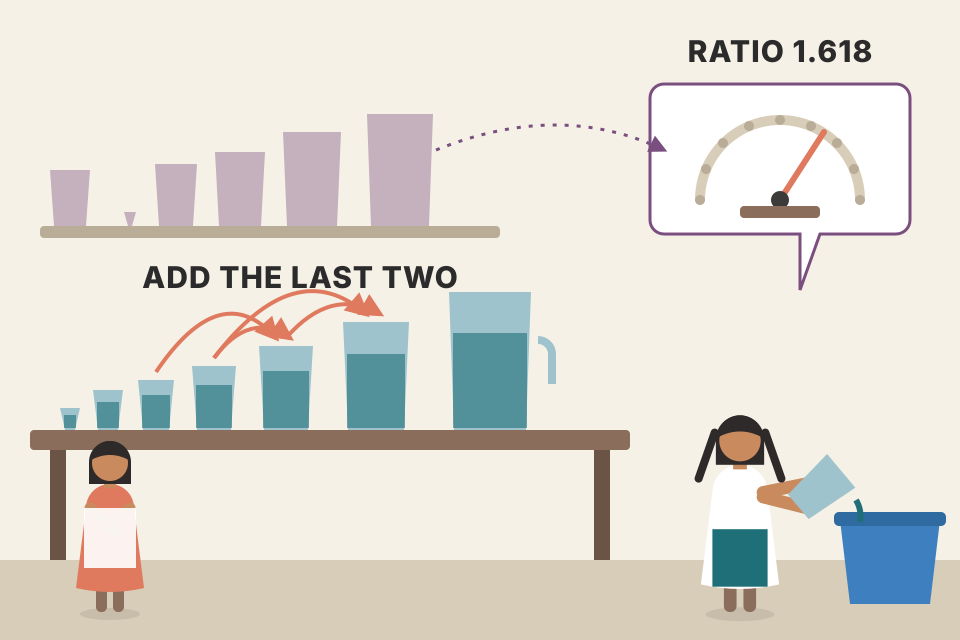
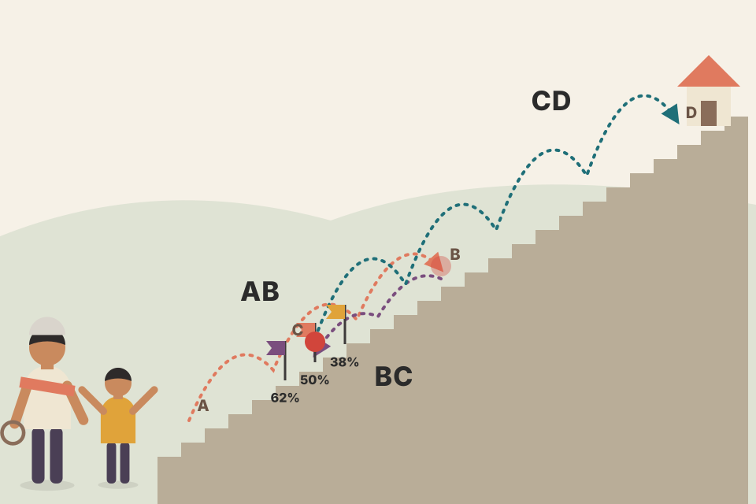
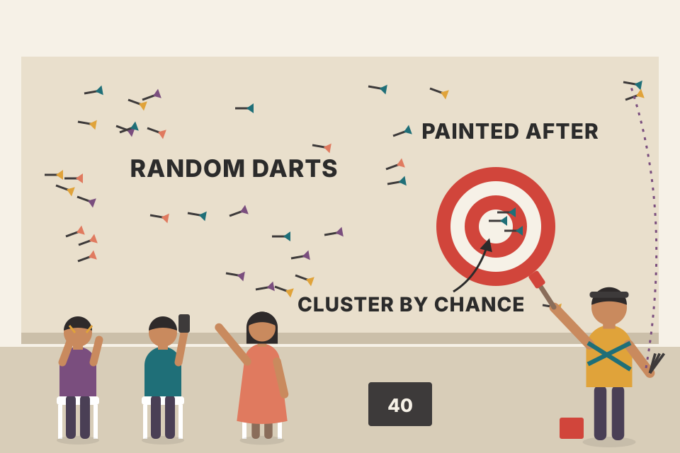
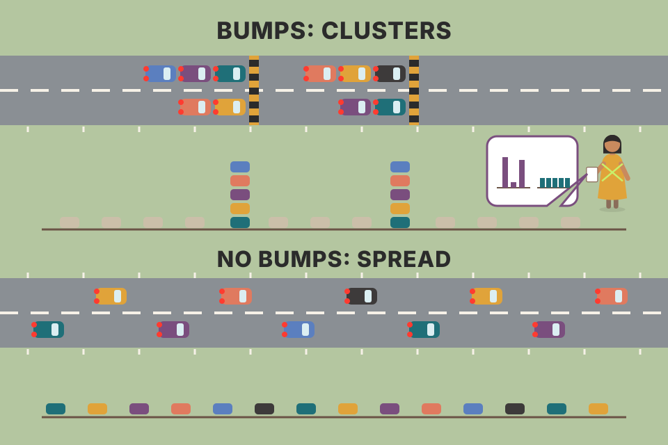

Many traders draw Fibonacci lines on their charts. They say a dip in a trend tends to stop at 38.2%, 50% or 61.8% of the move before it. Grimes does not argue with them. He counts.
He measures every swing in ten years of stocks, futures, forex and random-walk data. Then he looks for a bump at those levels. He does not find one.
"Scientific truth by consensus has had a uniformly bad history." (David Douglass, the chapter's epigraph, pdf p473)
This page follows the chapter in order. First, where the numbers come from. Then how traders use the tools, and why good-looking chart examples prove nothing. Then how the test is built, every table, and what to do instead. Each idea has a live tool you can play with.
All prices on this page are simulated. The simulations are my own rebuild of his method. They are not his data, and they are not evidence about real markets.
A share climbs from ₹1,000 to ₹1,200. Then it starts to slip. Where will the slip stop?
Many traders think they know. They draw lines at 38.2%, 50% and 61.8% of the climb. Here that means ₹1,123.60, ₹1,100 and ₹1,076.40. They plan to buy at those lines. These are Fibonacci levels, named after a number series from the year 1202. The series shows up in nature and in art. So people believe markets obey it too.
Grimes asks a plain question. Do dips really stop at those lines more often than anywhere else? If they do, it must show up when you count.
So he lets a program mark every up-move and down-move in ten years of prices. That gives 161,754 moves in stocks, futures, forex and made-up random prices. For each dip he writes down how deep it went, as a percent of the climb before it.
Then he draws the counts as a bar chart. If the lines matter, the chart should have tall bars at 38.2% and 61.8%. It does not. It is flat, like a table-top, from about 40% to 75%. And real markets look the same as random ones.
His advice is short. Expect a dip to end near half of the climb, give or take a lot. Do not use Fibonacci lines to pick your entry, your exit or your profit target.
| Word | What it means, in plain words |
|---|---|
| Trend | A market that keeps moving mostly one way, up or down, for a while. |
| Swing (or leg) | One clear move up or down, between two turning points. |
| Pullback (or retracement) | A short move against the trend. It takes back part of the last swing. |
| Setup leg (AB) | The trend swing that comes right before the pullback. Every measure on this page is a percent of it. |
| Extension (CD) | The next trend swing, the one that follows the pullback. |
| Fibonacci ratio | One of the numbers 23.6%, 38.2% or 61.8%. They come from dividing numbers in the Fibonacci sequence. |
| Confluence | Several Fibonacci lines, drawn from different swings, landing near one price. |
| ATR | Average true range. It tells you how far price usually moves in one bar. |
| Pivot | A turning-point bar. A pivot high has a higher high than the bars next to it. |
| Histogram | A bar chart of counts. It shows how many results fall in each range. |
| Random walk | A made-up price series where every step is pure chance. It has no pattern to find. |
| Mean and median | The mean is the plain average. The median is the middle value when you sort all the results. |
| Standard deviation (sd) | How far results usually sit from the average. A big number means results are widely spread. |
Sections 01 to 03 explain the claim and how traders use it. Sections 04 and 05 build the test. Sections 06 to 09 read the tables, one stricter cut at a time. Section 10 gives the verdict and what to do instead.
The chapter has three parts: the claim, the test, and the verdict.
The test comes in steps. Each step takes away one more excuse a believer could give:
Each time, the answer stays the same.
Start with a small game. Write down 0 and 1. Add them to get the next number. Then keep adding the last two numbers, again and again.
This is the Fibonacci sequence. In Western writing it first appears with Leonardo of Pisa, an Italian mathematician. People called him Fibonacci. That is short for filius Bonacci, which means "son of Bonacci". He used the sequence as an example in his book Liber Abaci, in 1202.
So how did a sum from 1202 end up on trading charts?
In the middle of the twentieth century, a man named Ralph N. Elliott fell for this sequence. He came to believe it was the base of something he called Nature's Law. He saw the law at work everywhere:
Grimes checks the counts, and they do not hold:
Elliott's logic went like this. The series matters so much in nature. So it must also matter in the ups and downs of financial markets.
Grimes finds Elliott's writing on this convoluted, which means tangled and hard to follow. And he says things have not become clearer since.
Here is the core claim of Fibonacci traders. Both the size and the timing of market swings follow ratios taken from the sequence. A swing is one clear move up or down, between two turning points. A ratio is one number divided by another.
The book calls the 61.8% constant Φ (phi), also known as the Golden Ratio. Grimes agrees that it truly appears in art, in architecture and in nature. On this one point, he says, the Fibonacci followers are correct.
The further along the sequence you go, the closer the answers get. For example, 89 ÷ 144 is much nearer to 0.618 than 3 ÷ 5 is.
Fibonacci traders also watch 50%. Grimes points out that 50% is not a Fibonacci ratio at all. He cannot explain why they focus on it.
Some traders go one step further. They give special weight to the numbers in the sequence, such as 5, 13, 55 and 144. They call these Fibonacci numbers.
Grimes calls this illogical. Take any two starting numbers and keep adding them the same way:
The same magic ratios appear further out. He gives two examples. One series starts {2, 5, 7, 12, …}. The other starts with 3, then 9,785, then 9,788. So there is no reason to treat the usual Fibonacci numbers as special.
He names two habits that come from this mistake:
Grimes says nothing justifies this practice. Yet it is very common in the books and the trading of Fibonacci followers.
So what do you do with this? Next time someone says a 55-bar average is special, you know better. A 54-bar average has the same claim to magic, which is none.

Pour two cups of any size into a bucket. Then keep adding a cup equal to the last two cups together. After a dozen pours, the last cup is always about 1.618 times the one before it. The sizes you started with do not matter.
The ratio belongs to the adding rule, not to the numbers 1, 1, 2, 3, 5. Where the picture breaks: real cups cannot keep growing forever. Numbers can.
Try it yourself. Type any two starting numbers below and watch the three ratios settle.
The rule says each term is the sum of the two before it. Maths calls a rule like this a linear recurrence. Such rules have a known shape. Every term is a mix of two parts:
Here φ ≈ 1.618 and ψ ≈ −0.618. They are the two roots, or answers, of the equation x² = x + 1. The letters c and d are fixed by the seeds. The seeds are your two starting numbers.
Now watch each part as t grows. The ψ part is multiplied by −0.618 at every step. So it shrinks toward zero. After a few terms only the φ part is left.
From then on, each term is about 1.618 times the one before it. So a term divided by its neighbour is 1/φ ≈ 0.618. That holds no matter what c is. The seeds only set c.
This is the mechanism behind Grimes' point. The "Fibonacci numbers" carry nothing special. This algebra is not in the book. I added it.
Most maths texts write the Golden Ratio as φ = (1 + √5)/2 ≈ 1.618. The book's 61.8% is that number turned upside down. It is 1/φ, which also equals φ − 1.
The other levels are powers of it: 0.382 = 1/φ² and 0.236 = 1/φ³. And 0.764, a ratio you will meet in section 03, is 1 − 0.236.
trading/concepts/murphy_moving_averages.md §5 records a remark by Murphy. He says Fibonacci numbers (13, 21, 34, 55…) "seem to work well" as moving-average lengths. Grimes says the opposite. A 55-bar average is no better than a 54-bar one for being "Fibonacci". The calculator above shows why the numbers themselves cannot matter.Picture an operating room. The surgeon points and says: "No, the other squiggly pink thing!" That patient is in trouble. Grimes jokes that this surely happens sometimes, but that is another story.
Every serious field has a shared set of words. Teachers, students and working people can then talk easily and clearly. They spend their energy on ideas, not on checking that everyone means the same thing.
Technical analysis is the study of price charts. Grimes says it has a real problem here. Every author invents his own terms. Authors often reuse older terms in a completely different way. Some have even tried to hide muddled thinking behind a pile of new, confusing words.
So Grimes uses one set of names through the whole book. Picture a rising market. It goes up, dips, then goes up again. Mark the four turning points A, B, C and D.
One more word. A trend is a market that keeps moving mostly one way for a while.
A note on the printing. In this PDF, the image above the caption "Figure 13.1 Schematic of Basic Market Structure" (pdf p475) is the wrong one. It shows the two-peaked distribution that belongs to Figure 13.6. So the A-B-C-D picture below is drawn from the text's description.
The three things Fibonacci ratios are used to predict:
Figure 13.2 applies retracement lines to several swings in Apple shares (Nasdaq: AAPL) from mid-2006. The pullbacks stop almost exactly at the 38.2%, 50% and 61.8% lines. It looks perfect.
Grimes says it plainly himself: yes, this is a carefully chosen example. Keep that in mind. One hand-picked chart tells you nothing about the next thousand swings.

A ball thrown up a staircase. It climbs a flight (AB), drops back part of the way (BC), then climbs a longer flight (CD). The Fib claim is about where the drop-back lands. It should tend to land on certain steps: 38%, 50% or 62% of the way down the flight it climbed.
Where the picture breaks: a ball obeys gravity every single time. Price obeys no such law.
Now see the tool on a chart. Step through the swings and watch where each pullback really ends.
Take a setup leg AB of 10 points. Say it runs up from 100 to 110. The retracement levels are measured down from B:
Now say the pullback ends at C = 105. The 161% extension rule projects the next leg from there:
The prices 100, 110 and 105 are mine. The 10-point leg, the 3.82, 5.00 and 6.18 steps, and the 161% rule are the book's.
The tool needs only two prices, A and B. So you can draw it on any swing. The real decision is which swing to draw it on. In published examples, that choice is made with hindsight. The author already knows how the chart ended.
Step through the simulated swings above. Some pullbacks land near a line. Many land between lines.
Now count the lines. There are five, spaced 12–15% of the leg apart. So almost every pullback ends within a few percent of some line. That is why a chosen example like Fig 13.2 can look perfect.
One swing gives you a handful of lines. But why stop at one swing?
You can join several small swings into one bigger structure. You can go far back in the chart. You can use swings from higher time frames, such as a weekly chart when you trade a daily one. Each choice gives you new anchor points for ratios.
Sometimes important ratios from different swings or time frames land at about the same price. Fib traders call this a confluence, which means a lining up. By tradition they believe a confluence is stronger than a single ratio. They think it is more likely to turn price around.
Figure 13.3 shows a confluence on the same AAPL chart. Grimes jokes that it may clarify the issue, or confuse it further. The chart labels points A to G and lays four sets of lines on top. The aim is to show how the low at G "could have been foreseen".
Notice the last one. Fib traders use extensions as well as retracements. Extensions are meant to predict profit targets. So they can also be used to project turning points.
The examples look very convincing. Grimes asks you to keep two points in mind.
So finding good examples is not the question. The real question is about a large set of swings. Over many swings, do Fibonacci ratios tell you more than any other randomly chosen ratio would? To answer that, Grimes turns to the data.

Throw a handful of darts at a wall. Then draw a target around the spot where three of them landed close together. The cluster is real. But it says nothing about your aim. With enough darts, some always bunch up.
Where the picture breaks: a dart lands once and stays. Chart lines can be redrawn again and again until some of them agree.
The tool below measures the first warning. It counts how often lines crowd around a turn, with Fib ratios and with random ones.
This test is not in the book. I built it to measure Grimes' first warning.
The chart uses random walks. A random walk is a made-up price series where every step is pure chance. It has no hidden pattern at all. Swings are found by my rule at 2 × ATR. ATR means average true range. It is how far price usually moves in one bar.
At each confirmed swing point, the test takes the earlier swing points you choose. It forms every leg between a high and a low among them. Then it draws that leg's 38.2 / 50 / 61.8 / 76.4% retracements.
A "confluence" here is two or more lines within your tolerance of the turning price. Tolerance is how close counts as near.
Then it repeats the count with the same number of lines at random ratios between 20% and 80%.
The counts are pooled over thousands of turning points. Fibonacci lines and random lines produce confluences about equally often. Both rates climb as you add swing points. That is Grimes' first warning, measured.
In a random walk this has to be so. The point is this. A confluence found on a chart cannot, by itself, tell real structure apart from a crowd of lines.
Each leg adds four lines inside its own price range. Now count the legs.
With five earlier swing points, which is the default, there are six high–low legs. That makes 24 lines packed into a few ATRs of price. With eight points there are 16 legs and 64 lines.
Pick any price in that range. The chance that two of the 24 lines sit within a quarter-ATR of it is high. It is high whatever the ratios are.
So a confluence mostly tells you how crowded the chart is. It means more only if you can show one thing. Confluences must happen more often at real turns than at random prices, or than with random ratios. That comparison is exactly what the rest of the chapter sets up.
trading/concepts/vwap_volume_profile_explained.md §4 records a course that stacks "confluences", such as checklist points and the POC. VWAP is the average price weighted by volume. POC is the price with the most trading. My backtests are in trading/backtests/backtest_results_summary.md. Each added confluence made the VWAP setups less bad, but none made them good.Grimes is honest from the start. No test of Fibonacci levels will satisfy every believer. His own goal is narrower. He wants to use only tools that have objective, strong support in the data.
And he sets a fair bar. Suppose the levels truly matter. Suppose there really is a mystical link between market swings and the "sacred geometry" behind the universe. Then it should not be hard to build a test that reveals it.
Grimes writes the question out exactly: "Are retracements in markets more likely to stop at Fibonacci levels than any other place?"
If the answer is yes, it will show in a large collection. Measure many retracements as ratios of their setup legs. More of them should end near 38.2%, 61.8% and perhaps 50%.
Treat every swing in the market as an extension (CD). When D is known, record two numbers. Both are a percentage of the setup leg.
In words: the retracement is the length of the pullback, divided by the length of the setup leg. The extension is the length of the next leg, divided by the same setup leg.
The setup leg is always the denominator, the bottom number of the fraction. And it is always the previous swing in the same direction as the extension.
Neither number can be recorded until D is finished. Then each swing gets measured twice over its life. First it is the extension of its own setup leg. Later it is a retracement, or a setup leg, for the swings after it.
A ruler that resets its length to each setup leg. Whatever the stock's price or volatility, the setup leg is "1". Volatility is how wildly a price moves. The pullback and the next leg are read off as fractions of that 1.
That makes a $5 swing in one stock and a ₹500 swing in another comparable. Where the picture breaks: a real ruler never changes length. This one does, and section 09 shows the trouble that causes.
The book works two small examples in Figure 13.4. Step through them below, one swing at a time.
The book does not draw the downswing in step 2. It only describes it. Grimes asks you to be sure you follow these sums before you read on.
This scheme allows retracements above 100%. Look at step 2. The "pullback" of 300% is really a whole up-move. It only looks huge because it is measured against a tiny down setup leg. Section 07 removes such cases.
One more thing matters a lot later. Every swing is the bottom number of the fraction for some records. It is the top number for others. So the same set of swing lengths creates both the R numbers and the E numbers. R is the retracement and E is the extension. Section 09 shows why this matters.
The two measures are easy. The hard part comes next. You have to mark every swing in the market, and Grimes admits that is no small job.
His rule set is very simple. It looks at two things, price structure and volatility, to decide when a swing has changed direction.
The exact rules are his own. He says they do not matter much. Many charting packages draw similar swings, and it is fairly easy to write your own.
He adds an honest warning. His results are a test of swing ratios as his model defines them. They may or may not carry over to other definitions. Another set of swing rules could find some ratios more or less significant.
Figure 13.5 shows his swings on the AAPL daily chart. Each swing is labelled with R, its retracement, and E, its extension.
Suppose Fib levels really do describe pullbacks. What is the simplest test that would show it? Collect every retracement as a ratio of its setup leg. Then draw a histogram, a bar chart that counts how many results fall in each range.
It is simple counting. There is only a lot of it.
A Fib-driven market should show peaks at the levels. The idealised Figure 13.6 has two humps, one at 38.2% and one at 61.8%. At the very least you would expect some bump or distortion near them.
There is a second check. Compare real markets with random-walk data, which is made-up prices that move by pure chance. If some mystical force shapes prices, the two should differ.
In short, the levels cannot be important and also be invisible in the data.
The first chart below draws swings by rule. The second shows the two shapes to look for.

If a road has speed bumps at 38 m and 62 m, cars slow down there. The slowing spots pile up at those two marks. If there are no bumps, the slowing spots are smeared out evenly. The histogram is a photo of where pullbacks stopped.
Where the picture breaks: you can see a speed bump on the road. A Fib level you can only guess at, from the pile-up.
The ATR filter decides what counts as a swing.
Raise it, and small wiggles merge into bigger swings. You get fewer, longer swings. Fewer shallow pullbacks are recorded. Set it to 0, and every alternating first-level pivot is a swing.
Try both on the chart. The R and E labels change a lot, swing by swing. But section 09 shows the proportions across many swings barely move.
My rule here has three steps. Find first-level pivots. Keep the most extreme one while price moves the same way. Accept a change of direction only when price has moved back at least k × ATR(20) from that extreme.
ATR(20) is the ATR over the last 20 bars. The letter k is the slider value. My rule follows his description, but it is not his code.
Now the machine runs. The swing rules go over the whole test universe from 2000 to 2010. For each swing, the program records the retracement and the extension.
Grimes first makes two checks for liquidity. Liquidity means how easily you can trade. It needs plenty of buyers and sellers.
Were the dropped swings odd in some way? No. They looked similar to the kept ones. Their mean, the plain average, was 124%. Their standard deviation was 104%. Standard deviation says how far results usually sit from the average.
So why drop them? Very illiquid markets have microstructure distortions. Those are quirks in how orders meet when few people trade. And few traders place chart-based trades there anyway.
Table 13.5 gives the raw retracement statistics for each asset class. The classes are equities, futures, forex and random. Futures are contracts to buy or sell later at a set price. Forex is the trading of currencies.
Pick a table below. The chart puts each class's mean and median side by side. The grid lists every class's numbers. The median is the middle value when you sort all results. IQR is the width of the middle half of the results.
What Grimes reads from it:
40 random walks × 2,000 bars. Swings are found by my rule, with the ATR filter from section 05. These numbers move when you change the filter or roll new markets. They are not Grimes' results.
Start with the dropped swings. The 20,212 swings were 11.7% of the equity results. From that you can rebuild the totals:
Now the median. The median retracement of all swings is 98.5%. So half of all "pullbacks" retrace less than the full setup leg. The other half retrace more. The arithmetic is mine.
Why is the median so close to 100%? Here is one way to see it.
Suppose swing lengths are independent. That means one length tells you nothing about the next. Suppose they are all drawn from one distribution, the same spread of likely sizes.
Then the next swing is equally likely to be shorter or longer than the last. So R = BC/AB has a median of exactly 100%.
Why does the mean sit above it? A ratio blows up when its denominator is small. A short setup leg followed by a normal swing gives 300%, 500%, even 1,000%. A few such giants lift the average.
Real and random data both behave this way. That is why the random walk row looks like the others. My simulation shows the same median ≈ 100%. This explanation is mine, not the book's.
Fibonacci ratios are supposed to work in trends. So the study should look at pullbacks inside trends. But the raw data holds "pullbacks" that retrace more than 100% of the setup leg. What are those?
Most traders would not call such a move a pullback at all. It is better seen as a trend leg the other way, or as a failed pullback.
Take an uptrend. Suppose a pullback breaks the pivot low at the start of the setup leg. For most trend traders, that is more likely a losing trade.
One way is to add a definition of trend and a trend filter. Then you measure only in the direction of that trend. Say the market is judged to be in an uptrend. You would measure up-moves as extensions and down-moves as retracements. You would ignore extensions that point down.
That road raises many questions, and people can disagree on each:
A test can be built to handle these questions. But each answer takes the test further from the raw data.
Grimes takes the simpler way. Drop every retracement over 100% of its setup leg. Drop the extension that follows it too.
That cut is itself a simple trend definition. A pullback under 100% holds a higher low in an uptrend, or a lower high in a downtrend. That is the key feature of most trend definitions built on market structure. Other definitions are built on indicators.
Choose Table 13.6 in the selector in section 06. About 50% of the swings are removed. The large outliers, the freak giant values, go. The mean moves close to the median. Dispersion, which is the spread of the results, drops sharply.
For the total: mean 65.3%, standard deviation (sd) 20.7%, median 66.3%, IQR 33.6%.
Grimes spots something curious here. Both mean and median are near 61.8%, one of the most important Fibonacci ratios. But both are clearly above it.
Figure 13.7 is the histogram of all retracements ≤ 100%. It shows no peak or distortion at 38.2% or 61.8%.
This is not what you would see if the levels mattered.
Figure 13.8 splits the same data by asset class. Remember that forex and random have small samples.
The forex histogram catches the eye at once. It is bimodal, which means it has two peaks. It looks like the idealised Fig 13.6. But look closer:
Again, there is no support for the claim.
The histogram below uses my random walks. Draw a small sample a few times and watch what happens.
A table-top, not two hills. Pullbacks stop anywhere from about 40% to 75% with roughly equal likelihood. They thin out below 30%.
Small samples make the table-top look bumpy, like a photo taken in low light. Draw 858 swings a few times and watch "peaks" appear and move. Where the picture breaks: a real table has sharp edges. This one slopes away gently at both ends.
Two things shape the curve.
Below ~30%, the ATR filter is at work. It stops very shallow pullbacks from counting as swings at all. Section 09 returns to this.
Above that, the shape comes from plain arithmetic. Take ratios of random swings of similar size. Keep only the cases where the second swing is smaller than the first. This curve is what you get.
Now the bump test in the readout. It takes the share of retracements within ±1.5 points of 38.2 and of 61.8. It compares that with the share in same-width windows, 4 points either side of each level.
A real Fib effect would push that ratio well above 1. Without one it sits near 1. On a random walk there is nothing to find. And Grimes' real-market histograms looked just like this.
The small-sample draws use a smoothed resample of the pooled swings. That means they pick again, at random, from the big pile. So every bump you see in them is noise. It is built that way.
trading/indicators/trend_vs_sideways_tools.md note says the 38.2/61.8 lines on the Choppiness index "are just thresholds". The Choppiness index is an indicator that scores how sideways a market is. That fits this chapter. Nothing about the numbers themselves is special.A believer has one more move. Fine, Fib ratios do not describe all pullbacks. But perhaps they describe the good ones, the ones that would be most profitable to trade?
Grimes tests that too. He picks out the good pullbacks with post hoc rules. Post hoc means "after the fact". The rules use what happened later, so nobody could trade this in real time. It is a research construct.
Why bother, then? Suppose Fib levels showed up in these best cases. Then a trader might build the skill to spot them live.
Keep the trade in mind. You buy into the falling pullback, to profit from the upswing of the extension. In a downtrend you do the reverse and sell into the bounce.
Choose Table 13.7 in the selector in section 06. About another 40% of the swings go. Yet the centre and the spread barely change.
For the total: mean 63.3%, sd 20.6%, median 63.6%.
Figures 13.9 and 13.10 show the histograms. The first has all qualified swings. The second splits them by asset class. Again there is no excess of pullbacks ending at or near the Fibonacci levels.
Now apply the three filters yourself, on my random walks.
Follow the count through the three tables:
The book rounds that last cut to about another 40%. Overall, 32% of all swings are "best trades". The arithmetic is mine, from the table totals.
Picking only the winning lottery tickets, and then checking whether their numbers cluster. If even the winners' numbers are spread evenly, there was no pattern to learn.
Where the picture breaks: lottery winners are pure luck. Good pullbacks may share something real. It is only not their depth.
Rules 1 and 3 filter on the extension. That changes which records you keep. But the retracement depth and the extension size are only loosely linked. So the retracement histogram keeps its shape.
Think about what a filter does. If a Fib effect were hiding among the good trades, the filter would have concentrated it. It did not.
Try unticking the filters above. The shape of the curve hardly moves.
Here is a line you will hear in many trading courses. Shallow pullbacks mean powerful trends. Put another way: smaller pullbacks lead to bigger extensions.
Group the extensions by the depth of the pullback before them. Call that depth r. If the belief is true, the average extension should be bigger for the shallower pullbacks.
Table 13.8 uses the volatility filter, which is the ATR rule from section 05. It shows the opposite of the belief. The mean extension rises with depth. It climbs from 36.7% for r ≤ 25% to 157.1% for r > 100%.
One group is small. The r ≤ 25% group has only 1,752 swings, because the volatility filter removes most very shallow pullbacks. Grimes calls that an artefact of the measuring method. It is not a fact about market structure.
But the test could be missing something. Maybe many very shallow pullbacks lead to very strong moves, and the filter hides them.
For the Fib question those pullbacks do not matter. They fall far short of the main levels. For this question they do matter. So Grimes removes the volatility filter and runs everything again.
Table 13.9 repeats Table 13.6 with no volatility filter. What changes:
The swings themselves are much smaller now. But their proportions hold. So the filter was not distorting the structure.
Table 13.10 repeats Table 13.8 with no filter. There are many more swings, especially small ones. The pattern is the same. Deeper pullbacks are followed by larger proportional extensions, from 130.8% up to 188.6%.
That clearly goes against the standard teaching of technical analysis. Grimes limits the claim to this data set and this time period.
He also adds a caution. These are proportions. A very small setup leg can lead to an extension that is huge in proportion. Yet in points it can be smaller than an extension off a big setup leg.
So what do you do with this? Do not rank a pullback as "strong" because it is shallow. The data gives you no reason to.
This part is not in the book. I added it.
Look at the two measures again. R = BC/AB and E = CD/AB. They share the same denominator, AB.
When AB happens to be short, both ratios come out large. When AB is long, both come out small. So deep retracements and big extensions go together. They do so even if the three swing lengths are completely unrelated.
My random walks have no memory at all. Yet they reproduce the rising pattern in the top chart.
Now tick "shuffle". It divides R and E by two different, unrelated setup legs. The link disappears and the bucket means go flat.
Statisticians call this the "spurious correlation of ratios". Correlation means two things move together. Spurious means false. They have warned about it since Karl Pearson (1897).
It matches Grimes' own caveat that the measures are proportional. And it suggests the finding says more about the measuring stick than about trend strength.
Take two long setups in the same stock.
B has twice the proportional extension. But it makes 12 fewer points of profit. The numbers are mine.
The volatility filter lets a swing count only once price has moved a minimum distance. That distance is k × ATR.
So a shallow pullback needs a long setup leg to be recorded at all. Long setup legs are big denominators. Their extensions therefore look small.
That is why the r ≤ 25% row in Table 13.8 is small, at 1,752 swings. It is also why that row has the lowest mean, 36.7%.
The no-filter run moves every row up. Tiny setup legs now count, and they make many very large ratios.
As printed: Table 13.9's total is 127,748. That is about 1.5× Table 13.6's 82,987, not "nearly threefold". Meanwhile the ≤ 100% rows of Table 13.10 add up to about 756,000.
Table 13.10 also prints the same max (4,554.6) for four groups, and the same min (4.5) for three of them. The numbers on this page are exactly as the book prints them. The mismatch is in the source.
So what is left after all that counting? Grimes ends with a short list.
What do you do instead? Plan for a zone, not a line. The calculator below draws that zone for any setup leg.
A stock rallies from ₹1,000 (A) to ₹1,200 (B). What does the chapter's evidence say?
The prices are mine.
This test is not in the book. I added it.
The setup leg from 0 to 1 is done. You place a limit buy at retracement level L, from 30% to 90%. A limit buy is an order that waits. It buys only if price falls to your level.
Your stop sits just below A, at price 0. Your target is the 161.8% projection of AB, at price 1.618. If price reaches the target before your order fills, there is no trade.
Each run uses 1,500 random paths, in small steps of 2% of the setup leg. Every level shares the same paths.
On a random walk, the win rate falls in a straight line as L deepens. The win rate is the share of trades that win. Theory gives this line:
And the expected average result is zero at every level, before costs.
The simulated average wanders a few percent either side of zero. That is sampling noise, the wobble you get from a limited number of paths. Every level shares the same paths, so the wobble is smooth and not jagged.
There is no kink at 38.2, 50 or 61.8. A real Fibonacci effect would have to show up as a kink like that in real data. Grimes' histograms show none.
This chart shows what "no effect" looks like. Statisticians call that the null. It is not evidence about any real market.
Deeper entries win less often. But each win is bigger and each loss is smaller. On a fair, random market the two always balance to zero, at every level.
A level can be special in only one way. Price must really stop there more often than elsewhere. That is exactly what the retracement histograms measure. A plateau means no level is special.
So any edge in a pullback trade has to come from somewhere else. It may be the trend context. It may be how the pullback forms, or the entry trigger. It may be how you manage the trade.
trading/backtests/backtest_results_summary.md: my one remaining lead from the Currency Pros checklist test used a limit at the 75% retracement. It was a 15-min intraday test. It made +₹1.35L on Nifty 200 in 11 months, mostly from Jun–Oct 2026. It was roughly flat on Nifty 50, and I marked it "paper trade only".trading/concepts/vwap_volume_profile_explained.md §4 calls the course's 67% and 75% entries "Fibonacci retracement". Neither is a Fibonacci ratio. By this chapter's evidence, the label carries no information either way.Take any two seed numbers and add them the same way: Xt = Xt−1 + Xt−2. The same ratios appear further out. His examples start {2, 5, 7, 12…} and 3, then 9,785, then 9,788.
So the ratios come from the adding rule, not from the specific numbers. Nothing Fibonacci justifies 5-minute bars over 6-minute bars. The same goes for a 55-bar average over a 54-bar one. (Section 01)
50% does not come from the sequence. 76.4% is used because it equals 100% − 23.6%. (Sections 01, 03)
AB is the setup leg. BC is the retracement, or pullback. CD is the extension, the next trend leg.
Both R and E are divided by AB. It is the previous swing in the same direction as the extension. (Sections 02, 04)
At 35: the setup leg is 15 and the pullback is 5, so R = 33%. The extension is 15, so E = 100%.
At 25: the setup leg is now the down leg from 25 to 20, which is 5. The "retracement" is the rise from 20 to 35, which is 15, so R = 300%. The extension from 35 to 25 is 10, so E = 200%. (Section 04)
(1) The more lines you draw, the more likely some look significant. With enough lines it is virtually certain.
(2) You can always find impressive examples. A good example does not mean the idea can be traded.
The real test is over many swings. Are Fib ratios more informative there than random ratios? (Section 03)
The distribution has a long right tail. A tiny setup leg gives a huge ratio, and those huge ratios pull the mean above the median.
Now the median. Say swing lengths in a row are roughly independent and alike. Then the next swing is as likely to be shorter as longer. So the median ratio sits near 100%. (Section 06. The second part is my explanation, not the book's.)
A move beyond 100% is not a pullback. It is a leg the other way, or a failed pullback. For trend traders it is usually a loser.
Keeping only R ≤ 100% means the pullback held a higher low in an uptrend. In a downtrend it held a lower high. That is the core of structure-based trend definitions. It also avoids a separate trend filter that people could argue about. (Section 07)
The forex sample is small: 858 swings ≤ 100%. So the bumps can be noise. And the peaks are near 48% and 80%, not at 38.2% or 61.8%. (Section 07)
One: extension > 25% of the setup leg. Two: retracement ≤ 100%, which means a higher low. Three: the extension makes a new high beyond B.
They depend on what happens after entry. That is what post hoc means. So they are a research construct. Even so, the retracement stats barely changed: mean 63.3%, median 63.6%. (Section 08)
The volatility filter needs price to move a minimum distance before a swing counts. So most very shallow pullbacks never register. It is a measurement artefact.
He ran the test again without the filter (Tables 13.9, 13.10). There were many more swings and larger dispersion. But the mean and median proportions were similar, and the rising pattern was the same. (Section 09)
From Grimes: the measures are proportional. A small setup leg can give an extension that is big in proportion but small in points.
Beyond the book: R and E share the denominator AB. So a short AB inflates both. A random walk with no memory reproduces the pattern. (Section 09)
Treat 61.8% as one arbitrary point inside a 40–75% plateau. Pullbacks commonly end anywhere in it, centred near 50%.
The level adds no information. So any edge must come from context, the pattern, or the trigger. And it has to be shown by testing against nearby non-Fib levels, such as 55% or 70%.
In Grimes' words, using Fib ratios for entries, stops or targets is likely a serious mistake. (Section 10)
A fair random walk is a martingale. That is a maths word for a fair game, where your expected gain is zero. Deeper entries win less often. But they win more and lose less per trade. The two balance exactly.
A real effect would appear as a kink at the Fib levels: a higher win rate than the straight line. That is the same thing as a bump in the retracement histogram. Grimes' histograms show no bumps. (Section 10, beyond the book)